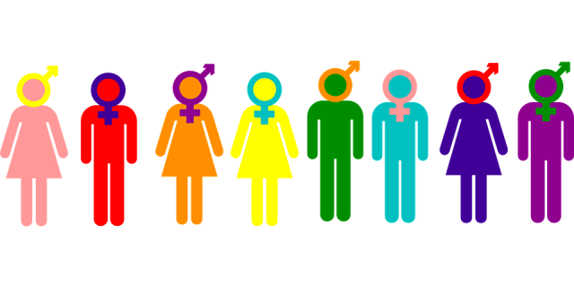

How mant genders are there?
The short answer, a lot. The long answer is tecnicly infinite... There is no limit to the difrent ways that people can present to the public, heres a list of the genders that I know: Male (including trans men) Female (including trans women) Non-binary (not within the binary gender system) Agender (dosent itentify as any gender or without a gender) Gender fluid (costantly shifting gender) Gender flux (any percentage of costantly shifting genders)